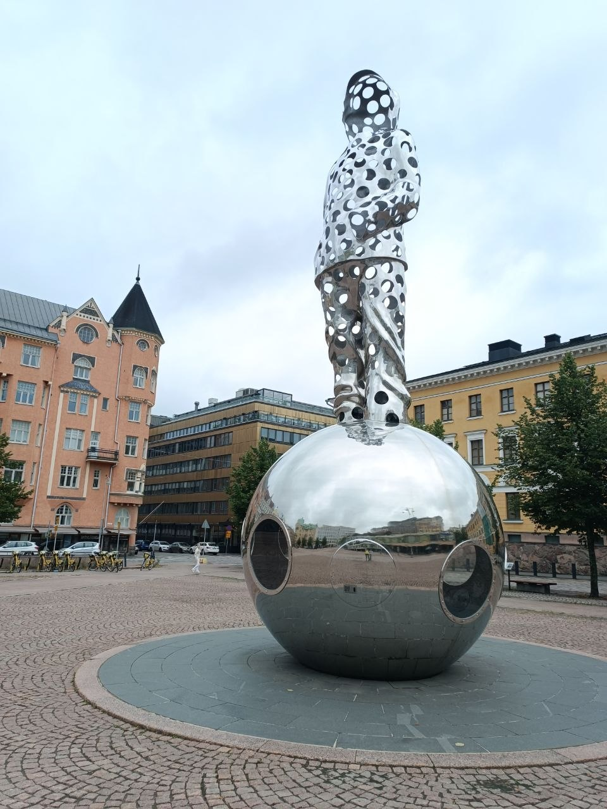
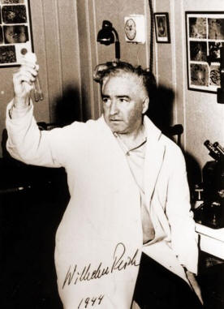
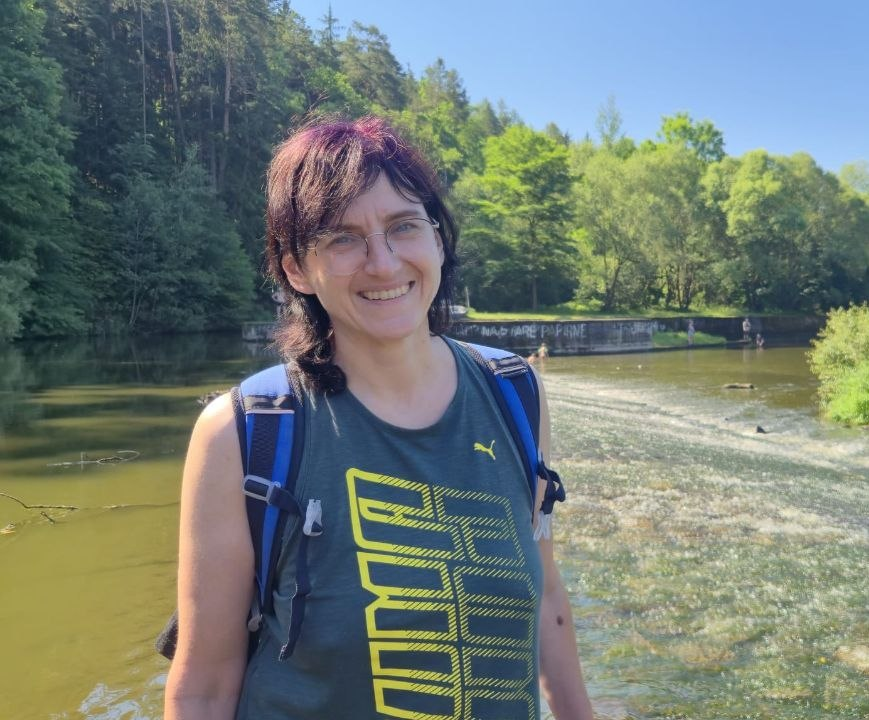
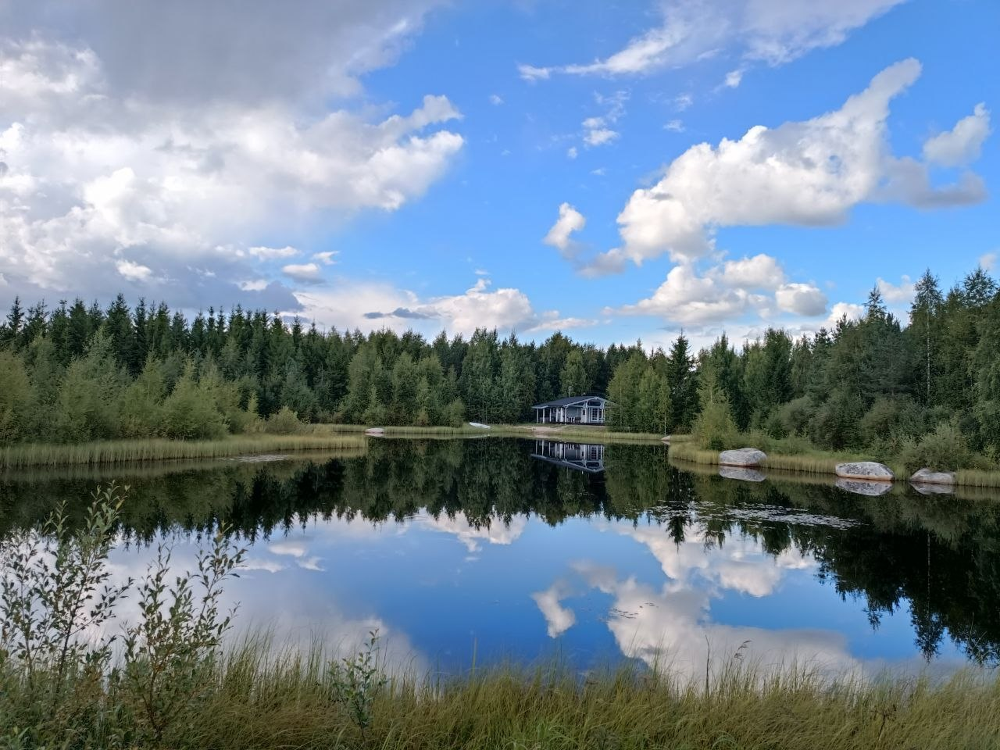

Тіло пам'ятає те, що розум намагається забути
Ви виїхали з України. Встигли облаштувати побут у Чехії — квартира, робота чи навчання, документи, мова. Зовні все ніби «нормалізувалося». А всередині — ні.
Впізнаєте себе в цьому?

- Ви прокидаєтеся втомленою, хоча спали 8 годин
- Плечі та шия кам'яні, але масаж допомагає на годину, потім усе повертається
- Ви розучилися розслаблятися — навіть у відпустці тіло «напоготові»
- Різкий звук — і тіло реагує раніше, ніж ви встигаєте подумати
- Ви функціонуєте, але не відчуваєте — ні радості, ні горя, просто рівне заціпеніння
- Розмови «як справи» викликають роздратування, бо відповісти чесно — означає відкрити те, що ви намагаєтеся не чіпати
Це не «просто стрес, який мине». Це тіло, яке протягом довгого часу утримувало те, що було неможливо прожити в моменті: тривогу, страх, безсилля, злість, розлуку з близькими. Розум може раціоналізувати і «рухатися далі», але тіло продовжує тримати м'язову напругу як броню — і ця броня не знімається розмовами.
Метод Райха: робота з тілесним панциром

Я практикую тілесно-орієнтовану терапію за методом Райха — австрійського психоаналітика українського походження, одного з основоположників європейської школи психоаналізу, який ще у 1930-х роках відкрив: емоції, які людина не може прожити, тіло не відпускає, а «заморожує» у вигляді хронічної м'язової напруги — панцира.
На відміну від розмовної терапії, тут робота йде не через слова, а через тіло — дихання, м'язові затиски, рух. Робота з панциром часто дає те, чого не дає бесіда: тіло реально відпускає те, що тримало.
Кому це підійде
- Ви давно живете в режимі «триматися» і не пам'ятаєте, коли тіло востаннє було спокійним
- Пройшли або проходите психотерапію, але відчуваєте, що «застрягли» — головою все зрозуміло, а легше не стає
- Фізично виснажені незрозумілою втомою, хоча аналізи в нормі
- Хочете не просто «виговоритися», а буквально відчути, як тіло відпускає напругу
Про мене

Марина Бондаренко
Я займаюся тілесними практиками 7 років. Пройшла навчання (5 ступенів) у школі розвитку та здоров'я В'ячеслава та Олени Смирнових, постійно практикую остеопатичні, психосоматичні та тілесно-орієнтовані практики, зокрема за методом Райха.
Працюю в Празі 6, поруч із метро Dejvická.
Я не лікар і не психотерапевт — моя робота не замінює медичну чи психологічну допомогу, а доповнює її через м'яку роботу з тілом. Якщо я побачу, що вам потрібен лікар або психотерапевт, я скажу про це прямо.
Готові спробувати?
Напишіть мені в Telegram, і ми домовимося про зустріч. Перша сесія — за півціни.
Написати в TelegramЯк проходить сесія
Ви лягаєте зручно на спину і розслабляєтесь — жодної попередньої підготовки не потрібно. Я працюю з тілом його мовою: через дотик, дихання, спостереження за тим, де тіло тримає напругу.
Що важливо знати про дотик
- Ви залишаєтеся в зручному одязі. Роздягатися не потрібно.
- Я працюю з обличчям, щелепою, руками, грудною кліткою, діафрагмою, животом і ногами. Інтимних зон не торкаюся.
- Ви можете зупинити мене будь-якої миті — одним словом, без пояснень і без незручності.
- Якщо є зона, до якої ви не хочете, щоб я торкалася, просто скажіть про це на початку.
За методом Райха тіло тримає напругу в семи сегментах — кільцями від голови до тазу, і ми йдемо згори донизу: очі, що звикли бути насторожі; щелепа з невисловленими словами; шия з пригніченим криком; груди, де стримане дихання і невиплакане горе; діафрагма зі звичкою завмирати; живіт, у якому живе безсилля; таз, де осідає виснаження і відчуття «життя на паузі».
Рухаючись по цих зонах, ми буквально даємо тілу дозвіл відпустити те, що воно тримало місяцями чи роками.
Чого очікувати

Після сесії люди зазвичай відзначають: тіло стає легшим і м'якшим, дихання — глибшим і вільнішим, сон — міцнішим. Емоції, які були «заморожені», починають знову відчуватися — іноді це сльози, іноді просто тепло і спокій.
Часті питання
Чи буде боляче?
Ні. Це не глибокий масаж і не «продавлювання» затисків. Дотик м'який, і його інтенсивність ми звіряємо з вами по ходу. Якщо десь незручно — ви кажете, і ми змінюємо спосіб дотику або пропускаємо цю зону.
Що як мене «накриє» просто на сесії?
Сльози, тремтіння, раптова злість чи сміх — нормальні реакції, коли напруга відпускає. Це не зрив, а розрядка, і вона минає в межах сесії. Я залишаюся поруч і не залишу вас у цьому стані: наприкінці ми обов'язково повертаємо вас у стійкий, спокійний стан, перш ніж ви підете.
А якщо я нічого не відчую?
Так теж буває, особливо на перших зустрічах — тіло, яке довго було «заморожене», не відтає з першого дотику. Це не означає, що нічого не відбувається. Часто зміни приходять пізніше: вночі, наступного дня, у тому, як ви дихаєте чи спите.
Чи можна, якщо я вже ходжу до психотерапевта?
Так, це добре поєднується. Розмовна терапія працює зі змістом, тілесна — з тим, що тіло тримає поза словами. Багато хто приходить саме тоді, коли головою вже все зрозуміло, а легше не стає.
Скільки сеансів потрібно?
Зміни відчутні вже після першої зустрічі, але стійкий результат дає серія з чотирьох сеансів протягом одного-двох місяців.
Готові спробувати?
Напишіть мені в Telegram, і ми домовимося про зустріч. Перша сесія — за півціни.
Написати в Telegram